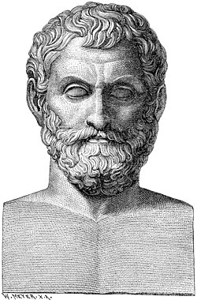

Thales (c. 624-546 BC)

Thales of Miletus (c. 626/623 - 548/545 BCE) was an ancient Greek philosopher from the city of Miletus in Ionia, on the coast of Asia Minor, in present-day Turkey. He is considered one of the earliest philosophers in the Greek tradition and was counted among the Seven Sages of Greece, a group of thinkers known for their wisdom. Thales helped introduce a new way of understanding the world by searching for natural explanations instead of relying entirely on myths and stories about the gods.
One of his most famous ideas was that water is the fundamental substance from which everything originates. He believed that water was essential to nature and that it formed the basis of all existence. Although this theory is not scientifically accepted today, it represented an important change in thinking. Rather than explaining natural events through supernatural forces, Thales attempted to identify a single underlying principle that could explain the world. His approach helped lay the foundations for the development of philosophy and scientific inquiry.
Thales was also associated with mathematics and astronomy. According to ancient accounts, he used geometry to estimate the height of the Egyptian pyramids by comparing their shadows with his own. He was also credited with predicting a solar eclipse, although the accuracy and details of this achievement remain debated by historians. Other stories attribute to him knowledge of the stars and the ability to recognize important astronomical events, such as solstices and equinoxes.
Beyond his philosophical ideas, Thales was remembered for applying knowledge to practical problems. Ancient writers described him as an intelligent observer of nature who believed that reasoning could help people understand and influence their surroundings. Some accounts also connect him with engineering, including a story in which he helped the Lydian army cross a river. Although many details of his life are uncertain, his reputation as a thinker who combined observation, mathematics, and logical reasoning made him an important figure in the history of Ancient Greek philosophy.
Thales' lasting importance lies not necessarily in whether all his theories were correct, but in the questions he encouraged people to ask. By searching for natural principles behind the world, he helped inspire later philosophers to investigate reality through reason and observation. His ideas marked an early step toward the systematic study of nature that would eventually contribute to the development of science.